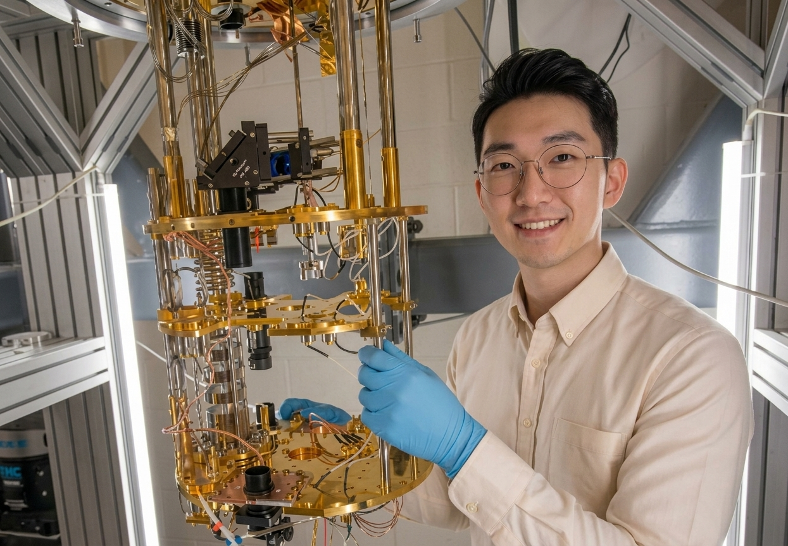
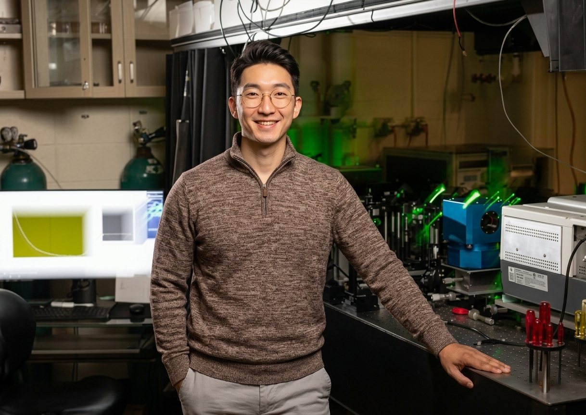

Quantum Computing
Quantum optimisation, QUBO/Ising formulations, quantum software and practical NISQ-era applications.
QUANTUM × AI × EARTH OBSERVATION
Exploring practical intersections between quantum computing, artificial intelligence, optimisation, remote sensing and aerospace systems.

01 — ABOUT
My background spans GIS and remote sensing, artificial intelligence and quantum computing. I am interested in using emerging computational technologies to solve real-world problems rather than treating quantum computing as an isolated technology.
My current research direction sits at the intersection of quantum optimisation, AI, Earth observation and aerospace.
02 — RESEARCH
Selected themes rather than a fixed boundary.
Quantum optimisation, QUBO/Ising formulations, quantum software and practical NISQ-era applications.
Multi-agent AI, constrained optimisation, intelligent orchestration and AI-assisted decision systems.
Remote sensing, hyperspectral imaging and computational approaches for environmental and hazard monitoring.
Stratospheric platforms, payload design and sensing systems for disaster response and hazard monitoring.
Designing practical learning experiences, curricula and workshops in quantum computing, AI and machine learning for students, researchers and industry teams.
Consulting to help organisations prepare for post-quantum cryptography (PQC) and plan quantum hardware integration.

03 — PROJECTS
EARTH OBSERVATION / AEROSPACE
Doctoral research direction focused on optimising hyperspectral payload design for stratospheric Earth Observation platforms.
QUANTUM + AI / STARTUP
A quantum-first AI platform exploring optimisation for visual intelligence, imagery/video workflows and agentic orchestration.
QUANTUM OPTIMISATION
Research into constrained multi-agent assignment using QUBO/Ising formulations and quantum optimisation approaches.
QUANTUM HARDWARE / EDUCATION
A vendor-neutral framework and workshop helping organisations understand quantum hardware modalities, compare providers and prepare for practical adoption.
CYBERSECURITY / POST-QUANTUM
Exploring post-quantum cryptography and the transition toward quantum-resistant security for systems and organisations.
04 — HACKATHON
Proposal projects developed with colleagues at UPM, Spain.
05 — EXPERIENCE
Massey University × Kea Aerospace
Hyperspectral payload optimisation for stratospheric Earth observation.
Quantum optimisation, QUBO/Ising modelling and AI-assisted optimisation.
GIS, Remote Sensing and spatial analysis.

06 — CONTACT
For research, collaboration or technology discussions.